About 6 min read
DocFit
Designing an AI product that fits spreadsheet data into a fixed document format, and keeps the layout intact across hundreds of documents.
- Role
- Product Designer
- Industry
- AI Document Automation
- Scope
- Product Vision & Strategy · Research · UX & Interaction Design · AI Interaction Design · 0→1 Product Design
Where it started
I kept noticing the same small problem in unrelated places. In engineering assignments, I had structured information that had to land in a specific format. Later, I watched teachers at a school do the same thing with hall tickets. All the student data was already in a spreadsheet, and the hall-ticket format was already fixed. Yet getting one into the other still meant adjusting spacing, fixing alignment, and checking every page to make sure nothing had shifted.
The content wasn’t the hard part. The data existed and the format existed. The tedious part was getting the two to work together perfectly.
I wanted to know whether that was just a school problem, and if not, whether it was worth building a product around.
The problem underneath
Research across HR, finance, healthcare, education, and other operational work showed the same pattern: people take structured data and manually fit it into a predefined document.
The data exists. The format exists. Getting them together accurately is still surprisingly manual.
At first it looked like a document-creation problem. The real friction came after the data went in:
The challenge isn’t putting data into a template. It’s keeping a fixed layout intact when the data keeps varying.
Existing tools each solved part of it:
-
Word Mail Merge
Familiar, but formatting is hard to control
-
Google Docs + Sheets
Easy collaboration, limited control for complex layouts
-
Excel + copy/paste
Flexible, but extremely manual
-
AI tools
Fast at generating and editing content, but not built for reliable batch layout
The gap was reliability for non-technical people, especially when formatting has to stay consistent across a large batch.
What research revealed
I started with four questions:
Is this recurring?
Who experiences it?
How do people solve it today?
Where does the process create the most friction?
I wasn’t trying to validate a solution I already had. I wanted to understand the problem well enough to see where a product could genuinely reduce effort.
Each finding pointed to a design decision:
People already have their own templates,
sodon’t make them recreate them
The data already lives in spreadsheets,
sosupport the sources they use
They only need certain fields,
solet AI work out which ones and map them
Layouts break because data varies,
sotreat layout preservation as a core requirement
The same formatting problem repeats,
socorrections should apply globally
Users aren’t necessarily technical,
sominimize configuration and jargon
Existing tools solve parts of the workflow,
sofocus on the gaps and don’t reinvent everything
The decisions
The opportunity shifted from “automate document generation” to something narrower: reduce the checking and fixing that happens after data enters a template.
Start from what people already have
Bring your own data (CSV, XLS/XLSX, Google Sheets) and your own format (DOC/DOCX, PDF). Data says what to fill. Format says how it should look. Nobody rebuilds a template they already trust.
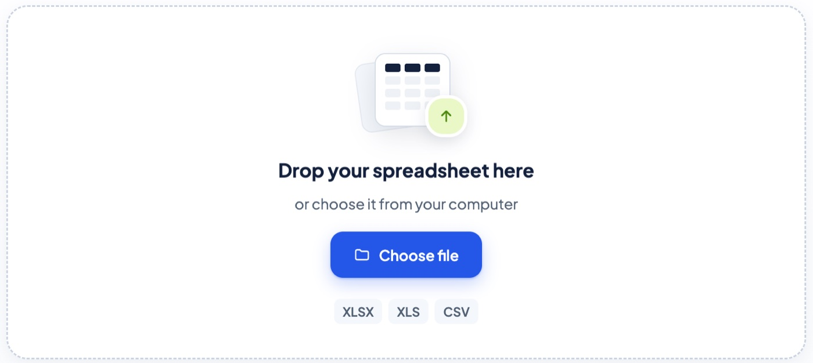
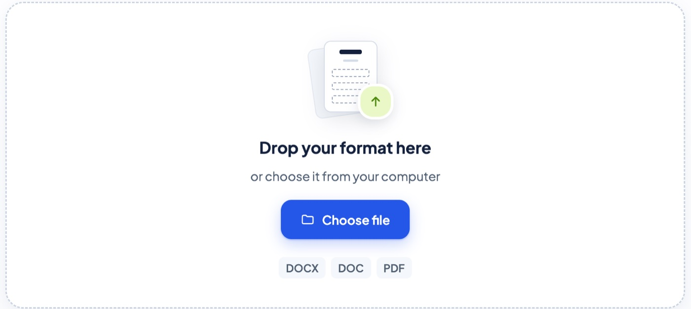
Let AI do the mapping, and speak up only when unsure
Matching “Name of student” to “Student name” shouldn’t need a human, and it shouldn’t depend on labels matching exactly. The AI maps fields, and the user is asked only when something is truly ambiguous.
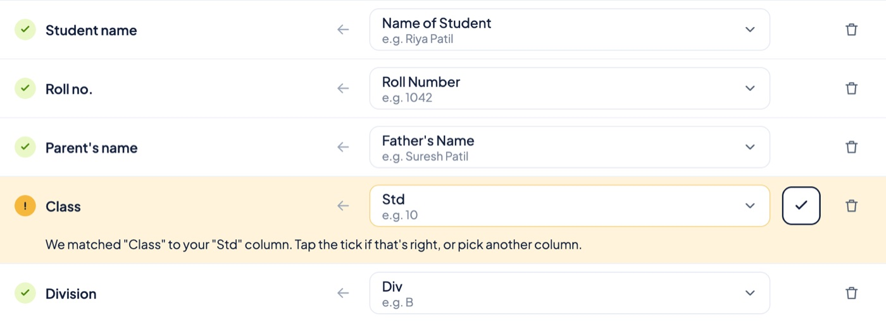
Treat layout preservation as the product, not a feature
The AI fits the data into the format. It never redesigns the format around the data. Typography, spacing, tables, borders, headers, signatures, and page structure stay as the user set them.
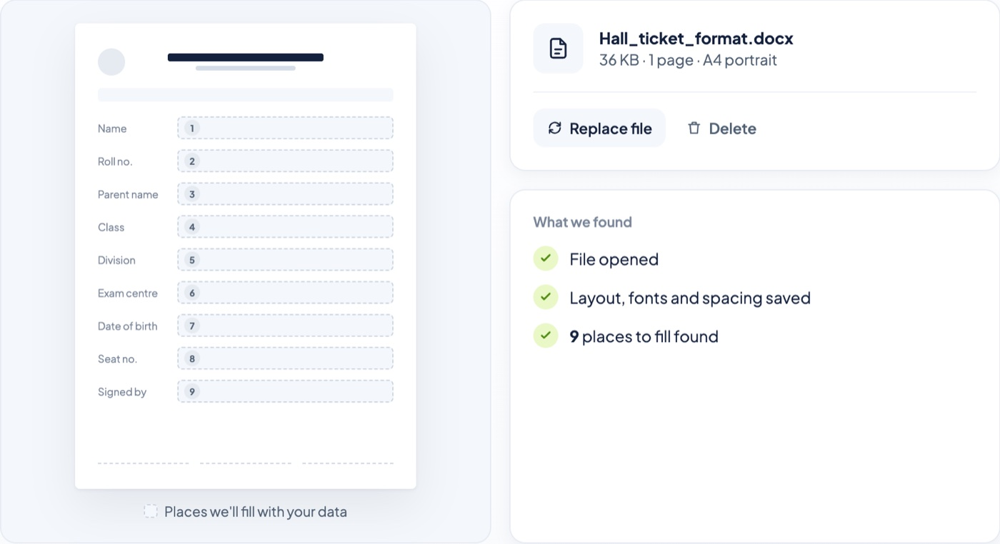
Replace “check every page” with “check what’s wrong”
Nobody can reliably inspect 300 pages by eye. The preview is designed to answer “did everything fit?” by surfacing overflow, missing fields, and layout shifts, for example “298 generated, 2 need attention.” A final validation runs before export.
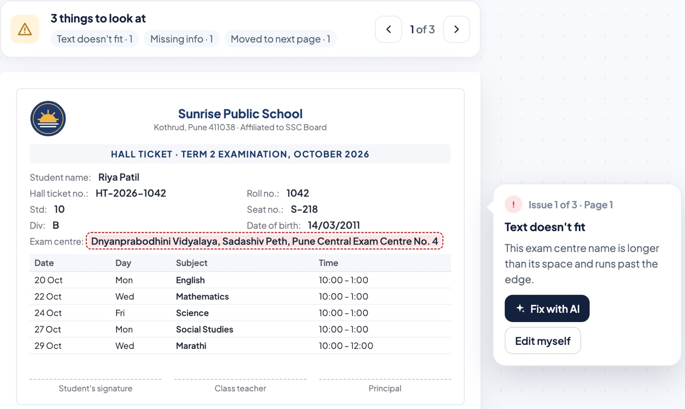
Fix a problem once, apply it everywhere
Small corrections can be made by hand. Repetitive or global ones are described in plain language, like “keep Standard and Division on the same line” or “move the signature 10px higher on every page.” The AI applies the change across every relevant document.
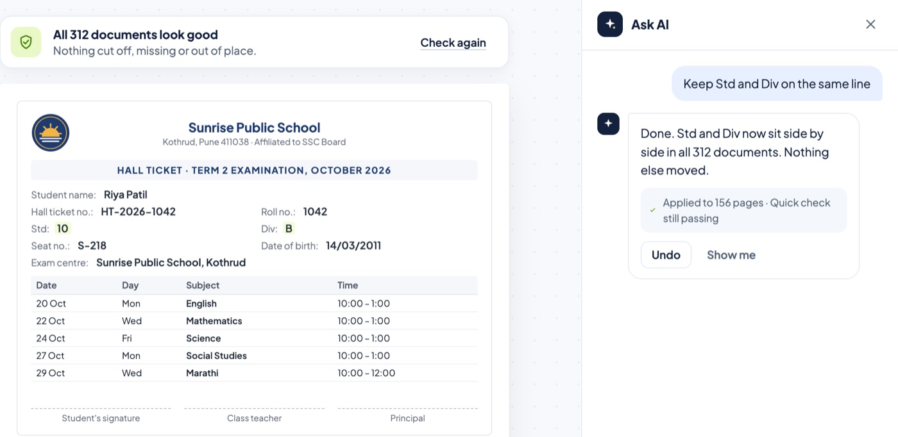
The flow
Six steps, each doing one job:
Provide the inputs
Data and format
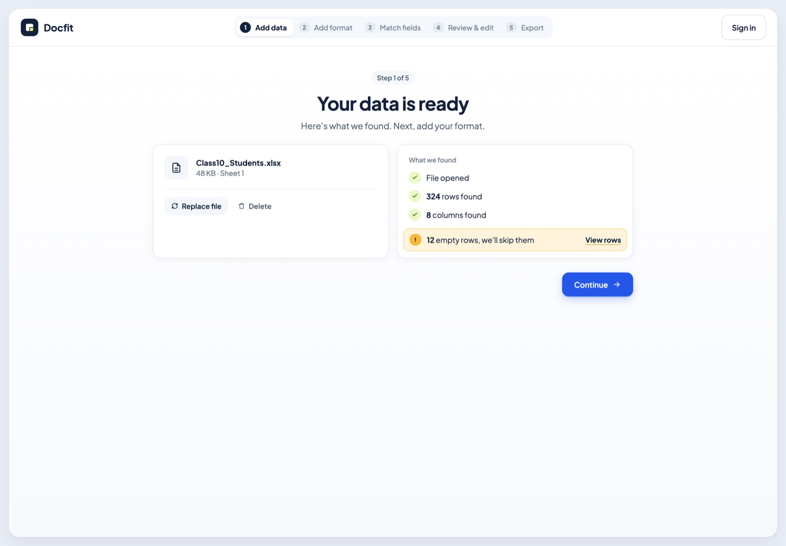
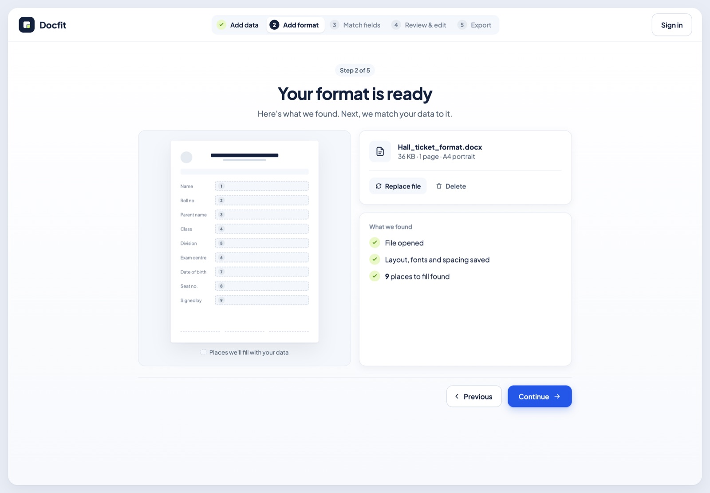
AI prepares the document
Maps fields, fills data, preserves layout
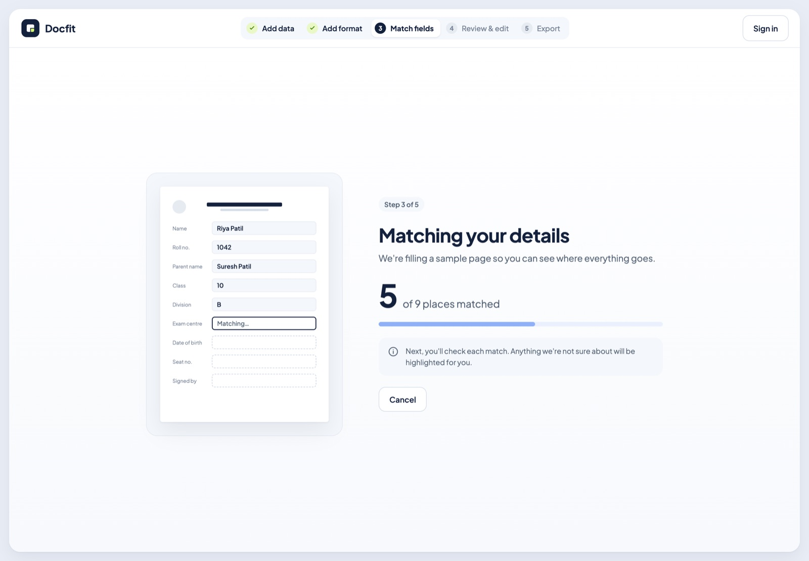
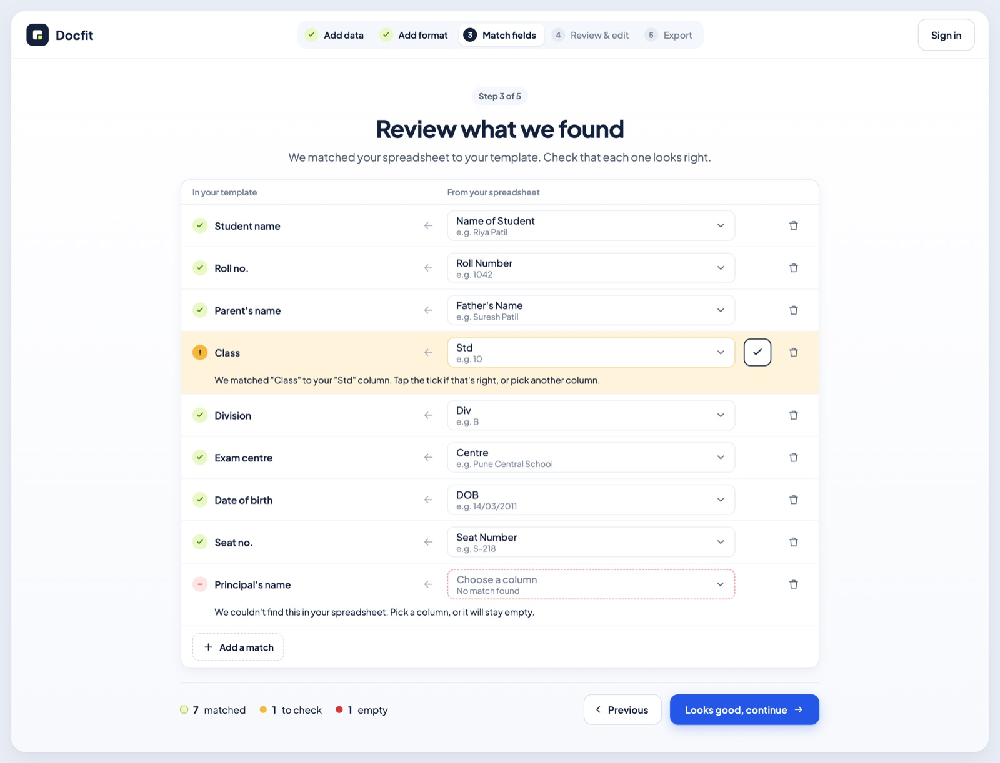
Preview
See issues before exporting anything
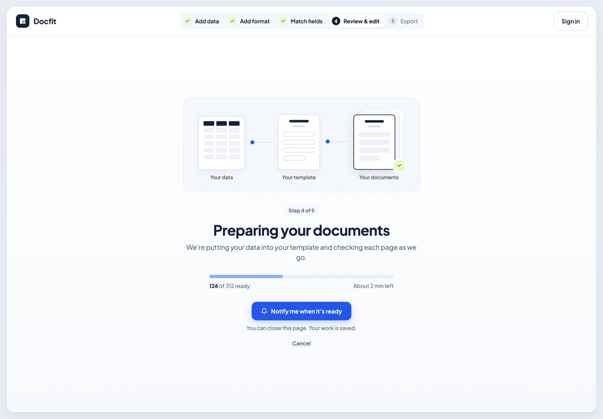
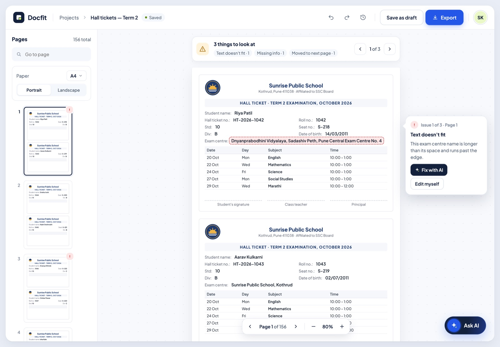
Review and refine
Manual edits or AI-assisted ones
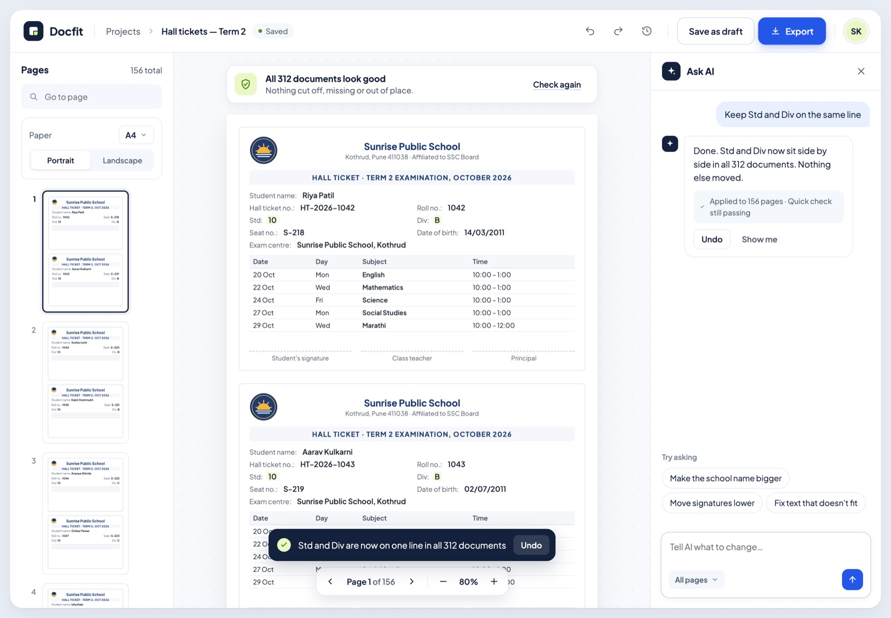
Finalize
A last validation before export
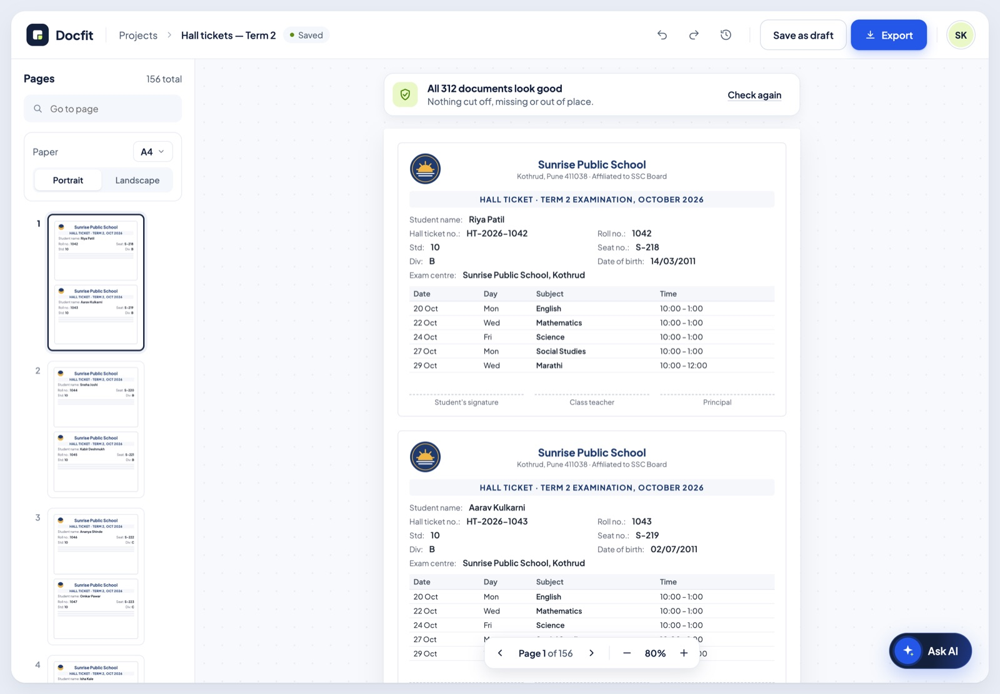
Export
PDF or DOCX, then back to the dashboard
Platform: desktop-first web
The work involves large datasets, multi-page review, and precise editing, and people already keep their data in browser-based tools like Sheets and Drive. I deliberately didn’t design for mobile. Tablet is a secondary experience that the flexible desktop layout can support.
What came of it
The founder sold DocFit to a client, and it’s built to be reused across more clients.
It started as an observation in a school and ended as a product someone paid for.
What I took away
DocFit taught me that the first description of a problem is rarely the real one.
Someone might think this was about creating documents, but it was about keeping a layout intact when the data keeps changing, and that changed what I built. It also taught me that a small frustration someone has learned to live with can be worth taking seriously, because it turned up in school, HR, finance, and healthcare. And designing with AI changed how I think about AI products.
The product wasn’t “AI does everything.” It was knowing when to ask, showing the result before anything is final, and making the checking easy.
That’s what made it feel trustworthy.